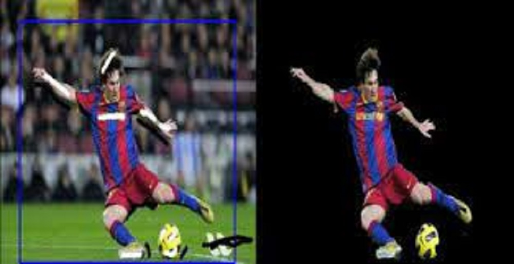

Instance Segmentation with Mask R-CNN and GrabCut.
Outline
We have built an exciting app that people can use for their instance segmentation tasks. Users can upload their own images and have them processed with a Mask R-CNN model and returned as an annotated image. We offer multiple modes to allow users to specify the type of objects they are interested in. Furthermore, we provide the additional functionality of GrabCut that users can make use of to obtain the mask for a particular instance of an object.
Background
Instance Segmentation
Instance Segmentation is a combination of object detection (classify individual objects and localize them using a bounding box) and Semantic Segmentation (classify each pixel into the given classes). Instance Segmentation involves detection and segmentation of the individual instances of objects.

Figure 1: Understanding Instance Segmentation. (Image Source: Halbe, 2020)
Mask R-CNN
Mask R-CNN (He et al., 2017) extends Faster R-CNN to pixel-level image segmentation. The key point is to decouple the classification and the pixel-level mask prediction tasks. A third branch for predicting an object mask is added on top of the Faster R-CNN framework to function in parallel with the existing branches for classification and localization. This mask branch is a small fully-connected network that is applied to each RoI to predict a segmentation mask on a per pixel basis.

Figure 2: Mask R-CNN is Faster R-CNN model with image segmentation. (Image source: He et al., 2017)
GrabCut
The GrabCut method is used to separate the object from background in an image. The user marks a rectangle around the object of interest. The outer part of the rectangle defines the definite background whilst the innter part contains an unknown combination of the object and the background. The iterative GrabCut algorithm is then used to assign each pixel in this bounding box its corresponding label of Foreground ot Background.

Figure 3: GrabCut algorithm at work.
Motivation
The task of instance segmentation is extremely important for critical computer vision tasks such as those involved with autonomous vehicles. For instance, if we solely use object detection in the autonomous vehicles, there is a chance that the bounding boxes of multiple cars may overlap and this will confuse the self-driving vehicle. Instance segmentation helps overcome this flaw. The ability to detect the spatial boundaries of objects down to pixel level detail instead of broadly sensing their location could mean the difference between the vehicle safely navigating its way through and the vehicle striking other cars or objects. In a world of high velocity traffic and unpredictability, the smallest details can have some of the most serious consequences, good or bad. Instance segmentation will continue to play a crucial role in various computer vision tasks long into the future. Autonomous vehicles, medical imaging, facial recognition, robotic procedures; all of these fields rely on being able to accurately differentiate object instances, and we are fascinated by its long term potential.
Approach
High Level Steps
We make use of Facebook AI Research's (FAIR) Detectron2 (Wu et al., 2019) as the Mask R-CNN package to implement instance segmentation
We have six instance segmentation modes:
Generic - This mode provides the largest detection range for common objects.
Marine - Detect marine animals such as fish, crab, starfish and marine waste such as bottles, nets, and wreckage.
City - A mode for users who want to perform instance segmentation on urban street scenes.
Nature - For those who love squirrels and butterflies
Balloon - A mode for performing instance segmentation on frames involving balloons
Micro-Controller - Can be used for frames involving Arduino, Raspberry Pi, Lora, and ESP8266
To enhance App interactivity, we make use of the baseline model (R50-FPN) that has the lowest inference time.
We then obtain Mask R-CNN models (either pre-trained or fine-tuned) for each of the corresponding modes.
Implement GrabCut algorithm
Develop App Front-End
Integrate all the above components through App backend
Reference
[1] Kaiming He, Georgia Gkioxari, Piotr Doll ́ar, and Ross Girshick. Mask r-cnn. InProceedings of the IEEEInternational Conference on Computer Vision, pages 2961–2969, 2017.
[2] Yuxin Wu and Alexander Kirillov and Francisco Massa and Wan-Yen Lo and Ross Girshick. Detectron2. https://github.com/facebookresearch/detectron2. 2019